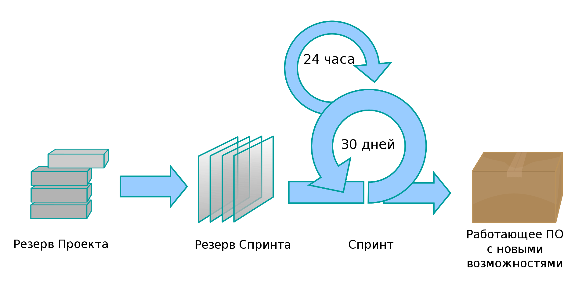

Шимко Никита, Выговский Евгений, Гришутенко Павел
Шимко Никита, Выговский Евгений, Гришутенко Павел, 3 курс
Agile (Гибкая разработка ПО) – обобщающий термин для целого ряда подходов и практик, основанных на ценностях Манифеста гибкой разработки программного обеспечения и принципах, лежащих в его основе.
12 принципов, которые составляют Agile Methodology, можно поделить на 4 главные идеи:
SCRUM – гибкая методология управления задачи и проектами. Принципы SCRUM заключается в командном подходе, коротких итерациях и непрерывном улучшении в процессе работы. Хоть данная методология и применима в решениях любых задач (от производства до бытовых проблем), наиболее популярна она в сфере IT.
Спринт — промежуток времени, достаточный для выполнения запланированной совокупности операций SCRUM, целью которой является создание инкремент бизнес-продукта. Жестко фиксирован по времени. Длительность одного спринта от 1 до 4 недель. Чем короче спринт, тем более гибким является процесс разработки, релизы выходят чаще, быстрее поступают отзывы от потребителя, меньше времени тратится на работу в неправильном направлении. С другой стороны, при более длительных спринтах команда (SCRUM Team) уменьшает издержки на совещания, демонстрации продукта и т.п. Разные команды подбирают длину спринта согласно специфике своей работы, кросс-функциональности команд и требований, часто методом проб и ошибок. Для оценки объема работ в спринте можно использовать предварительную оценку, измеряемую в очках истории. Предварительная оценка длины спринта фиксируется в бэклоге проекта (product backlog).
Бэклог проекта — это список требований к функциональности, упорядоченный по их степени важности, подлежащих реализации. Элементы этого списка называются пользовательскими историями (user story) или элементами бэклога (backlog items). Бэклог проекта открыт для редактирования для всех участников процесса SCRUM. Ведёт бэклог проекта владелец продукта SCRUM.
Бэклог спринта — содержит функциональность, выбранную владельцем продукта из бэклога проекта. Все функции разбиты по задачам, каждая из которых оценивается командой SCRUM. На Sprint Planning Meeting команда оценивает объем работы, который нужно проделать для завершения спринта методом покера планирования.
Scrum-доска — это инструмент «опрозрачивания» текущей работы Scrum-команды. Scrum-доска состоит из трех колонок: «сделать» (to-do), «в процессе» (in progress), «сделано» (done). На Scrum-доске располагается весь объем Sprint Backlog, который команда взяла в работу на Sprint Planning. Обычно карточки бизнес-задач располагаются на доске сверху-вниз в порядке убывания приоритета (сверху самые важные, снизу неважные). Хорошей практикой является декомпозиция бизнес-задач на конкретные работы (технические, организационные, и другие), которые надо сделать команде, чтобы бизнес-задача была реализована. Бизнес-задачи, и карточки конкретных работ, двигаются по доске из колонки в колонку, по мере того, как команда берет их в работу (In Progress), и завершает (Done). «Убывание работы» изо дня в день, визуализируется на Burndown Chart'е, для обеспечения прозрачности прогресса работы команды
Scrum Master - арбитр, который организует и проводит совещания, следит за соблюдением всех принципов скрама, разрешает противоречия и защищает команду от отвлекающих факторов, проводит фасилитацию митингов, отвечает за учет, хранение и выдачу SCRUM-инвентаря. Данная роль не предполагает ничего иного, кроме корректного ведения скрам-процесса.
В нее входят специалисты, знакомые со многими функциями, и работающие над созданием продукта от начала и до конца. В команду входят представители разных профессий, у каждого свой взгляд и свое мнение.
Sprint Review - обзор спринта, участвуют все, встреча открытая. Команда рассказывает, что было сделано, и демонстрирует те части проекта, которые окончательно готовы.
Плюсы методологии: • спринты, благодаря которым команда может справиться с большими сложными проектами в меньшие сроки; • динамичность – работа разбивается на 30-дневные циклы с еженедельными собраниями, вследствие чего разработка и внесение изменений проходят динамично; • командная работа – по причине зачастую отсутствия менеджера проекта, работа команды основывается на самоорганизации, члены которой четче понимают свои задачи и вовлечены в проект.
Минусы методологии: • недостаточная гибкость для больших команд; • требовательность к компетенциям членов команды; • требовательность к командной работе. SCRUM наиболее эффективен для применения в опытных, дисциплинированных и мотивированных командах.